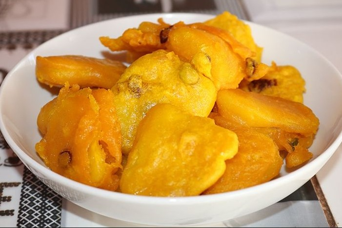

Futali is a traditional Malawian breakfast dish made from sweet potatoes (or pumpkin, cassava, or plantains) and groundnut (peanut) flour. It is a savory, nutrient-dense meal typically served warm with tea or coffee, and is never eaten with nsima.
For fried sweet potato fries, a reliable method involves blanching the potatoes first to ensure a crispy exterior. Peel and cut 3 sweet potatoes into sticks, then boil them in water for 3-4 minutes until just tender. Immediately cool them in an ice bath to stop the cooking process. Pat the fries dry and toss them in a mixture of 2 cups flour and 2 tbsp Creole seasoning. Heat oil to 350°F in a deep fryer or heavy pot. Fry the coated fries in batches for 3-4 minutes until browned and crispy, then serve immediately with a spicy mayo or ranch dipping sauce.: 4 medium (peeled and cut into 1-inch cubes)
½ to 1 cup (unsweetened powdered peanut butter works)
Enough to cover the potatoes
To taste
Place the cubed sweet potatoes in a pot with water and salt. Cover and boil over medium-high heat for 15–30 minutes until tender.
Drain most of the water, leaving about 1 inch of liquid remaining in the pot.
Pour in the groundnut flour and stir to combine with the potatoes and residual water.
Cover the pot and let it simmer on low heat for 5–15 minutes, stirring occasionally, until the mixture thickens into a smooth, porridge-like consistency.
Eat your Futali with other relish or without and you may also drink with tea or coffee.
Enjoy your meal!